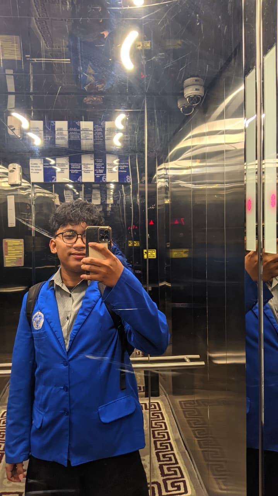

Halo, selamat datang di portofolio saya
Halo, saya Raffa Reissa Prayata
Siswa yang suka mencoba hal baru, terutama di bidang teknologi.
- KelasXII TKJ B
- JurusanTeknik Komputer dan Jaringan
- SekolahSMK 3 Perguruan Cikini
- MinatTeknologi
📷
Taruh fotomu di sini
foto/foto-saya.jpg
Tentang Saya
Sedikit tentang saya
Saya Raffa Reissa Prayata, siswa kelas XII TKJ B di SMK 3 Perguruan Cikini. Saya suka mencoba hal baru, terutama yang berhubungan dengan teknologi.
Pengalaman PKL
Praktik Kerja Lapangan
Klik kartu untuk membaca penjelasan tiap kegiatan.
- Tempat PKLKementerian Hukum RI, Direktorat Jenderal Administrasi Hukum Umum
- LokasiJl. H.R. Rasuna Said Kav. 6-7, Jakarta Selatan
- Periode1 Juli - 30 September 2026
- DivisiTU Pimpinan dan Protokoler
Pengalaman OSIS
Organisasi Siswa Intra Sekolah
Klik kartu untuk membaca peran saya di tiap acara.
- OrganisasiOSIS SMK 3 Perguruan Cikini
- JabatanKetua Sekbid Bela Negara
- Periode2024 - 2026
Yang saya pelajari dari OSIS
- Kepemimpinan
- Kedisiplinan
- Tanggung Jawab
- Kejujuran
- Public Speaking
Kontak
Hubungi saya
Silakan hubungi saya lewat kontak berikut.